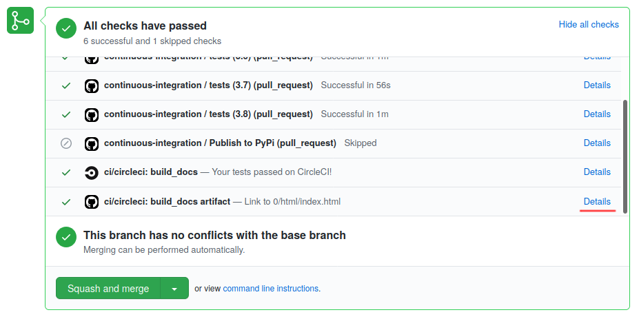

Contributing¶
The documentation for this theme (what you are looking at now) also serves as a demo site for the theme.
Hint
The top-level Demo site section includes more pages with typical Sphinx content and structural elements.
Installing Python dependencies¶
To run the demo site, first install the Python dependencies, for example with pip
or conda:
# with pip
python -m pip install -r docs/requirements.txt
# or with conda
conda install -c conda-forge --file docs/requirements.txt
Installing this theme¶
Next, install this theme itself, a python package. When developing, it is recommended to install in "development" or "editable" mode, allowing changes in the repo to be directly tested with this documentation suite.
To install the package, from the root of this repo, run:
python -m pip install --editable .
Building the demo site¶
For a traditional Sphinx build of the demo site, navigate to the docs/ directory,
and run:
make html
Sphinx will build the HTML version of the site in the docs/_build/html directory.
Note
If you wish to customize the CSS or JS beyond what is available in the Configuration and Customizing the theme sections of the user guide, extra steps are required. The next section covers the full workflow, from changing the source files, to seeing the updated site.
Developing the theme CSS and JS¶
The CSS and JS for this theme are built for the browser from src/* with
webpack. The main entrypoints are:
CSS:
src/scss/index.scssJS:
src/js/index.jsprovides add-on Bootstrap features, as well as some custom navigation behavior
webpack:
webpack.common.jscaptures the techniques for transforming the JS and CSS source files in
src/into the production assets inpydata_sphinx_theme/static/
These entrypoints, and all files they reference, are bundled into
pydata_sphinx_theme/static/{css,js}/index.<hash>.{css,js}.
The <hash> ensures the correct asset versions are served when viewers return to your
site after upgrading the theme, and is reproducibly derived from src/**/*,
webpack.{common,prod}.js, and the dependencies and devDependencies
in package.json/yarn.lock.
Web fonts, and their supporting CSS, are copied into
pydata_sphinx_theme/static/vendor/<font name>/<font version>/. Including
the <font version> also ensures the correct assets are served when upgrading.
The links to these unique file names are captured as Jinja2 macros in
pydata_sphinx_theme/static/webpack-macros.html.
Finally, all of these files are committed to the repo, in-place, along with the
rest of the code. This allows use of the theme directly from a git checkout,
without any of the finicky web development dependencies, or even a nodejs
runtime.
Hint
Theme development was inspired by the ReadTheDocs Sphinx theme.
Steps to develop the theme¶
Install
yarnInstall theme dependencies
Run development server
Build production assets
Install the testing infrastructure
Attention
In order to commit changes to the theme, ensure you run
yarn build:production so all built assets will be bundled, copied, or
generated into pydata_sphinx_theme/static/.
Installing yarn¶
Yarn is a package manager for JS and CSS dependencies.
Yarn itself can be installed with a number of
package managers, including
conda:
conda install -c conda-forge yarn
Installing JS dependencies¶
To install theme-related dependencies and devDependencies from package.json,
from the root of this repo, run:
yarn
After adding/updating dependencies with yarn add, or manually changing package.json
and re-running yarn, the yarn.lock and package.json files will likely change.
Important
If changed, commit package.json and yarn.lock together to ensure
reproducible builds.
Running the development server¶
To preview the frontend assets, from the root of this repo, run:
yarn build:dev
This launches a development server at http://localhost:1919. When working on the theme, saving changes to any of:
src/js/index.jssrc/scss/index.scssdocs/**/*.rstdocs/**/*.py
...causes the development server to reload:
bundle/copy the CSS, JS, and vendored fonts
regenerate the Jinja2 macros
re-run Sphinx
Building the production assets¶
To build the new theme assets into the python package, from the root of this repo, run:
yarn build:production
Install the test infrastructure¶
This theme uses pytest for its testing, with a lightweight fixture defined
in the test_build.py script that makes it easy to run a Sphinx build using
this theme and inspect the results.
In addition, we use pytest-regressions
to ensure that the HTML generated by the theme is what we'd expect. This module
provides a file_regression fixture that will check the contents of an object
against a reference file on disk. If the structure of the two differs, then the
test will fail. If we expect the structure to differ, then delete the file on
disk and run the test. A new file will be created, and subsequent tests will pass.
Install the testing dependencies with:
pip install pytest pytest-regressions
Then run the tests by calling pytest from the repository root.
Changing fonts¶
Three "styles" of the FontAwesome 5 Free icon font are used for icon links and admonitions, and is the only vendored font. Further font choices are described in the Customizing the theme section of the user guide, and require some knowledge of HTML and CSS.
Attention
Previously-included fonts like Lato have been removed, preferring the most common default system fonts of the reader's computer. This provides both better performance, and better script/glyph coverage than custom fonts, and is recommended in most cases.
The remaining vendored font selection is:
managed as a dependency in
package.jsonallowing the version to be managed centrally
copied directly into the site statics, including licenses
allowing the chosen font to be replaced (or removed entirely) with minimal templating changes: practically, changing the icon font is difficult at this point.
partially preloaded
reducing flicker and re-layout artifacts of early icon renders
mostly managed in
webpack.common.jsallowing upgrades to be handled in a relatively sane, manageable way, to ensure the most recent icons
Upgrading a font¶
If only the version of the existing font must change, for example to enable new icons, run:
yarn add <font name>@<version>
yarn build:production
It may also be necessary to clear out old font versions from
pydata_sphinx_theme/static/vendor/ before committing.
Changing a font¶
If the above doesn't work, for example if file names for an existing font change,
or a new font variant altogether is being added, hand-editing of webpack.common.js
is required. The steps are roughly:
install the new font, as above, with
yarn addin
webpack.common.js:add the new font to
vendorVersionsandvendorPathsadd new
linktags to the appropriate macro inmacroTemplateadd the new font files (including the license) to
CopyPluginremove references to the font being replaced/removed, if applicable
restart the development server, if running
rebuild the production assets, as above, with
yarn build:productionpotentially remove the font being replaced from
package.jsonand re-runyarncommit all of the changed files
Contributing changes¶
We follow a typical GitHub workflow of:
create a personal fork of this repo
create a branch
open a pull request
fix findings of various linters and checks
work through code review
For each pull request, the demo site is built and deployed to make it easier to review the changes in the PR. To access this, click on "Details" of the "build_docs artifact" job of Circle CI:
Ensuring correct commits¶
To ensure all source files have been correctly built, a pre-commit hook is available.
To set this up, first install the pre-commit package:
# with pip
pip install pre-commit
# or with conda
conda install -c conda-forge pre-commit
Then, from the root of this repo, run:
pre-commit install
Now all of the checks will be run each time you commit changes.
Note that if needed, you can skip these checks with:
git commit --no-verify
Make a release¶
This theme uses GitHub tags and releases to automatically push new releases to PyPI. For information on this process, see the release checklist.